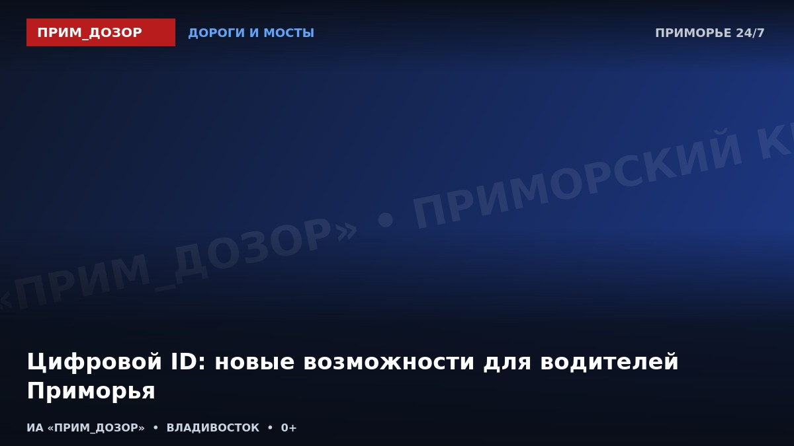
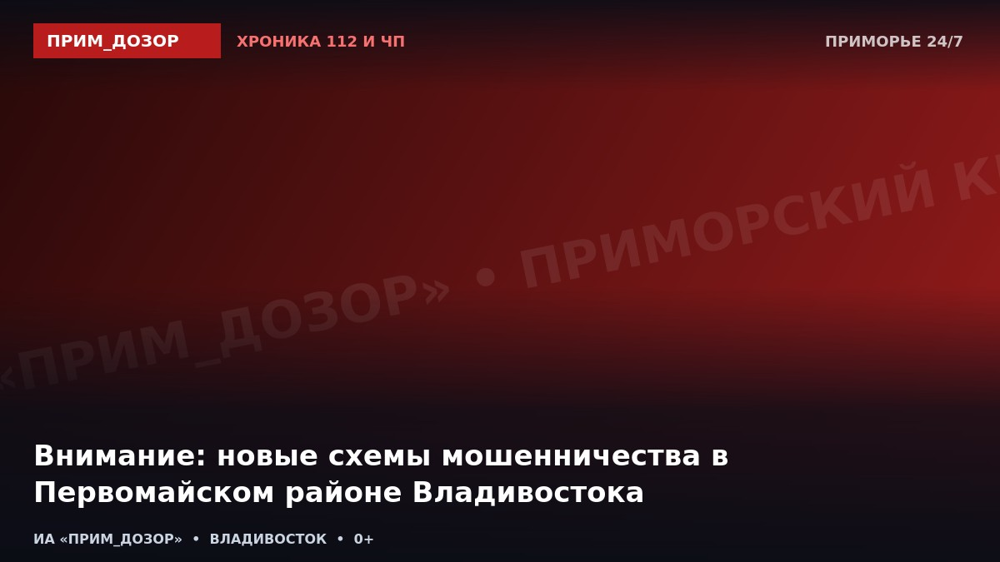
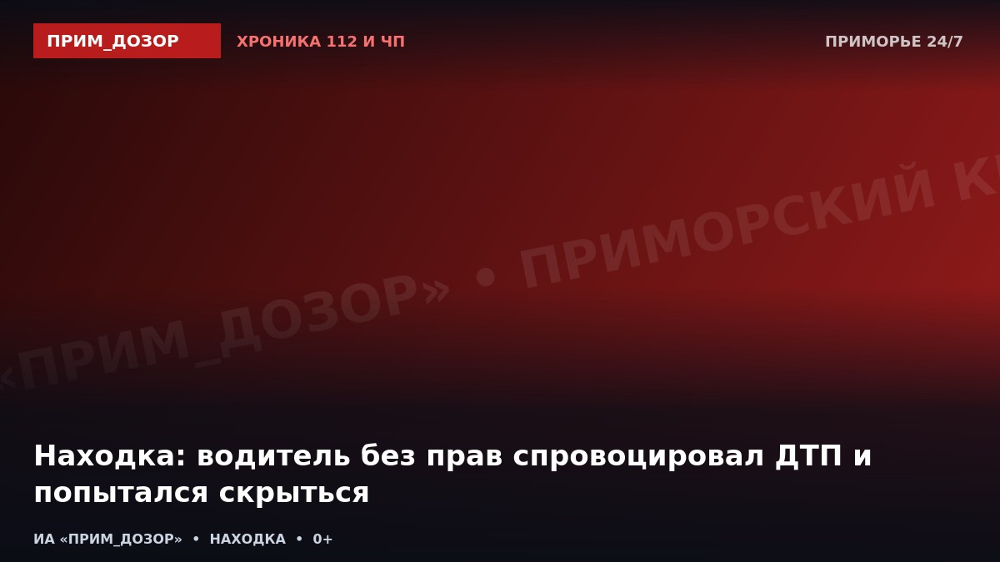
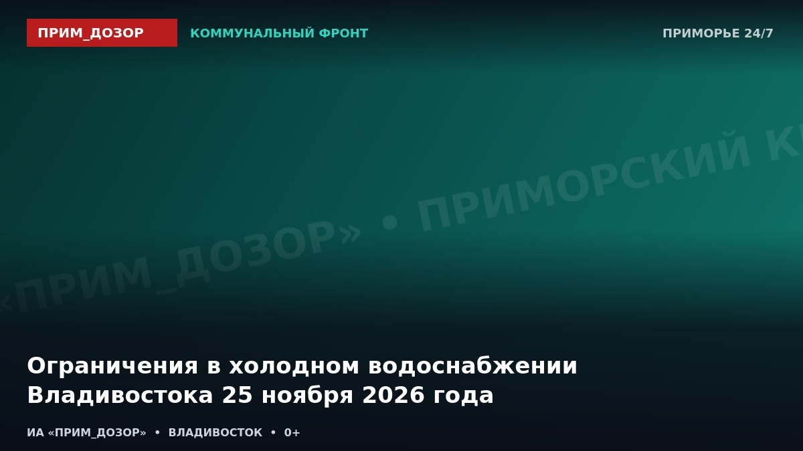

Цифровой ID: новые возможности для водителей Приморья
В Приморском крае внедрение цифровых технологий продолжает набирать популярность. Одним из последних нововведений стало появление возможности предъявлять в...

В Приморском крае внедрение цифровых технологий продолжает набирать популярность. Одним из последних нововведений стало появление возможности предъявлять в...





